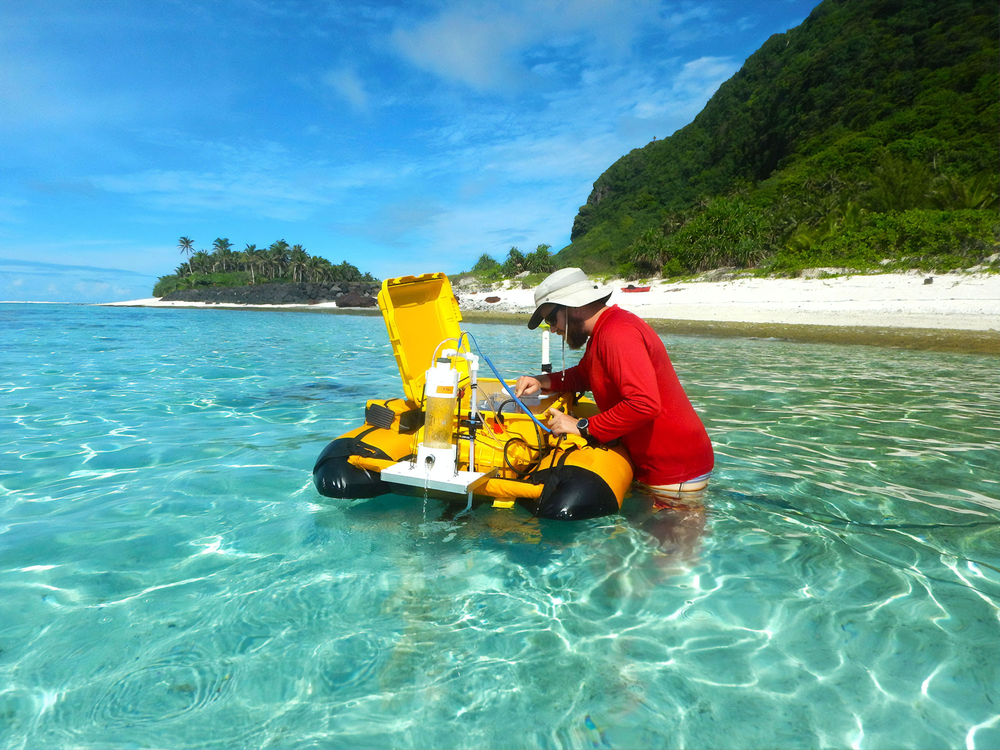

Heartwarming Reunion: Lost Pup Found Safe and Sound

Community Effort Leads to Joyous Return of Beloved Canine Companion
- In a heartwarming turn of events, Max, a beloved pup who went missing from
his neighborhood home, has been found thanks to a community-wide search
effort. Residents, along with local animal organizations, joined forces to
track down Max, ultimately leading to a tearful reunion with his owners,
Owner Names. The event serves as a powerful reminder of the strength of unity
and compassion in reuniting lost pets with their families.
"We can't express how grateful we are to everyone who helped bring Max
back home. The outpouring of support from our community has been overwhelming."
-John and Jane Smith
TechCorp Battles Ocean Plastic Pollution!

A New Era in Ocean Conservation The War on Plastic Begins
- In a big step towards cleaner oceans, local tech start-up TechCorp
has revealed a groundbreaking solution to tackle plastic waste in
our seas. his innovation brings hope for a future with cleaner,
healthier oceans, emphasizing our shared responsibility in
protecting our planet's delicate ecosystems.
Smith, John. "Innovative Tech Start-up Unveils Breakthrough Solution to Tackle Ocean Plastic Crisis." EcoTech Insights, vol. 23, no. 5, 2023, pp. 12-15.
Article 3: Heading

Older Students Mentor Younger Peers for Stronger Schools
- Riverside Elementary's 'Book Buddies' program is transforming
education by pairing older students with younger counterparts,
fostering literacy skills and a tight-knit school community.
This initiative not only enhances reading abilities but also
instills leadership and empathy among older students. Through
shared reading experiences, students form lasting connections,
creating a positive ripple effect throughout the school. Riverside
Elementary leads the way in educational innovation, demonstrating
that education is about nurturing compassionate citizens who can
make a positive impact.
Smith, Jane. "Building Bonds: 'Reading Buddies' Program Nurtures Literacy and Community." Education Insights, vol. 24, no. 3, 2023, pp. 8-11.